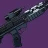

推荐者：
小宁四码头 高阶暴君
 泰坦 · 虚空 · PVPS29 · 凯旋纪念碑
泰坦 · 虚空 · PVPS29 · 凯旋纪念碑
66/33皆可，无论是否触发武器大师都是秒人
# 四码头 高阶暴君 推荐人：小宁 描述：66/33皆可，无论是否触发武器大师都是秒人 更新：2026.9.6 分支：虚空 类别：PVP 核心：高阶暴君 ## 职业 职业：泰坦 超能：暮光军火 星相：堡垒、进攻堡垒 碎片：饥饿回声、坚韧回声、扩张回声、吸吮回声、警惕回声 手雷：抑制手雷 近战：圣盾投掷 职业技能：巍峨屏障 ## 武器 异域武器：真相 传说武器：僵局 | 威胁探测、强力首发 传说武器：高阶暴君 | 精细调整、武器大师、帝国效忠 ## 护甲 异域护甲：独眼面具 套装：机械营 2 件 × 铁甲 2 件 头盔：特殊武器弹药搜寻者、虚空瞄准性能、冰影瞄准性能 护臂：快速球、虚空灵巧、冰影灵巧 胸甲：虚空弹药生成、稳定虚空瞄准、稳定冰影瞄准 腿部：恢复能量球、药到病除、冰影枪套 职业物品：强力吸引、收割者、面面俱到 ## 神器 神器：废墟石板 模组：光子耀斑、不稳定神枪手、邪恶编织、邪恶收割、闪电过载、虚空助焊、崩解 ## 六维 六维：生命 160～180 ｜ 近战 70+ ｜ 手雷 80+ ｜ 超能 80+ ｜ 职业 70+ ｜ 武器 ~